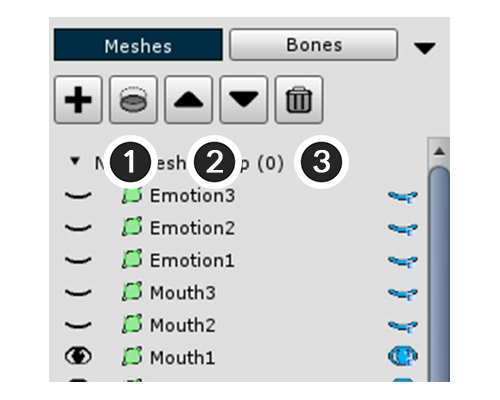
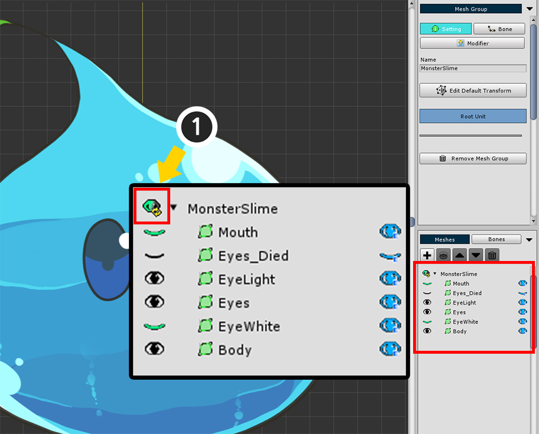
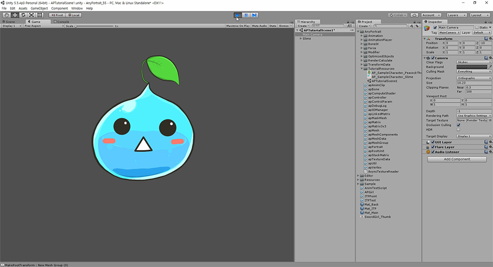

AnyPortrait > Getting Started > 1.4. Creating Mesh Groups
1.4. Creating Mesh Groups
1.1.7
The most central of the various elements of AnyPortrait is Mesh Group.
If you look at the name, it's easy to see "Meshes are together", but adding various functions to the mesh group can give various effects.
At this time, the added functions are called Modifier.
Depending on what modifier you are adding to the mesh group, bone animation may be added, or morphing animation may be added.
This section covers the steps before creating a mesh group and adding a modifier.

In the Hierarchy UI (1) Click on the "Add Mesh Group" button and select the mesh group created.
When you select the mesh group, "Setting", "Bone", "Modifier" menu appears on the right screen.
With the Setting menu selected, (2) Set the name of the Mesh Group (Slime).

The mesh group detail screen is divided into 3 areas.
1. Main Menu : There are "Setting", "Bone", "Modifier" menus. Displays the default settings or sub menus of each menu.
2. Sub Mesh / Mesh Group Hierarchy, Bone Hierarchy : Display meshes, mesh groups, or bones of the mesh group.
3. Object information : The information of the object selected such as an mesh, modifier, bone is displayed.
Now you need to do the basic work of the mesh group.

1. Menu tab : There are "Setting", "Bone" and "Modifier" menus.
2. Name : You can edit the name.
3. Edit Default Transform : You can move meshes while this function is enabled. This is a function that specifies the "default position" of meshes.
4. Set Root Unit : When the button is pressed, the current mesh group is registered as the root unit. Only mesh groups registered as root units are moved to the scene.
5. Remove Mesh Group : Delete this mesh group.
6. Fold the menu : This minimizes the fold zone.

Add meshes to the mesh group.
(1) Press the "+" button to open the dialog to select the target to add.
In this dialog you can add a mesh by selecting them or selecting another mesh group.
(2) Click the Mesh tab.
(3) Select a mesh, and Add it by (4) clicking Add button.

One mesh has been added as above. Repeat the above procedure for all meshes.

In v1.1.7, multiple Meshes and Mesh Groups can be selected and added at once.
Hold down the Ctrl or Shift key and select multiple Meshes and Mesh Groups.
You can select or deselect them all at once by pressing the Select All button or the Deselect All button.

If you add all the meshes, they look like the above.
The shape is not pretty because all the positions are gathered at the origin.
Moreover, it is difficult to distinguish all eyes and mouth shapes because they are printed at once.
You have to modify the Default positions of each mesh and try to set Show / Hide as default.

(1) Press the Edit Default Transform button. When the button is pressed, the button turns blue and is activated.
In this state, you can move the mesh / mesh group to get the default shape.
Using the (2) "Select", "Move", "Rotate", and "Scale" tools (shortcut keys Q, W, E, R ),
(3) Locate the meshes in the appropriate positions,

If you need to change the rendering order of registered meshes or need to delete them, you can use the top menu of Sub Mesh Hierarchy.
1. Clipping to the lower layer : Use the lower layer of the selected layer as a clipping mask.
2. Rendering order Up / Down : Change the rendering order. The rendering order is rendered in front of the mesh above.
3. Remove selected objects : Remove the added mesh or mesh group.

As you work, the meshes may overlap and may not be visible.
Each item in the Sub Mesh Hierarchy has an eye icon on the left and right of each item.
It is a function that shows or hides each object. (Show / Hide)
However, there is a difference.
The eye-shaped button on the left determines the "Temporal visibility" for the task. It is not a value that is actually stored.
The eye-shaped button on the right is the "Stored visibility".
The current state in which you are working with the Default Edit Transform determines the "Initial visibility when there is no modifier".
< Temporal Rendering of Mesh >
The below are tips on "whether the mesh is temporarily rendered" for the task.

(1) Pressing the button at the top of the list resets all "temporarily rendered".
(2) Press the Ctrl key and click the eye icon, all other meshes are set to the opposite of whether the selected mesh is rendered.
(3) Depending on the editor settings, you can make sure that "temporarily rendered" is not reset automatically during the task. (Related Page)

If you have set both the default position of meshes and the default visibility (1) Turn off Edit Default Transform mode.
Now, set this slime as (2) Root Unit to move to the scene.

If you set it as root unit, you can see that "Root Unit 0" is added to the left UI.
(1) Select "Root Unit 0" and check if the mesh group you just worked on is rendered.
(2) Press the "Bake" button to open the dialog to export to scene.
(3) Press the "Bake" button on the dialog and exit the editor.
Note :
Bake will export all Root Units to the scene.
Root Unit 0 is shown first and the rest is hidden.
You can replace it with another Root Unit by using script or animation.

You can see the slime applied to the scene.
When you run the game, you will see that the "Show / Hide specified by default" works.
Setting up a scene for AnyPortrait
When you export your character to the scene, it may not appear correctly or may be lighter or darker.
You must configure the scene for the 2D character and materials.

First delete the Directional Light that is automatically added when you create the scene.

(1) Select Main Camera.
(2) Change the Camera settings as follows.
- Set Clear Flags to Solid Color.
- Change Projection to Orthographic type.
- Change Size. Generally, it is recommended to specify a value of 10 for the output created by AnyPortrait.
- Set Clipping Planes. It is recommended that the distance between Near and Far be within 500.

Click Window > Lighting in the top menu to open the light settings.
Make the following changes to this setting:
- Disable Skybox.
- Change the Ambient Source to Color.
- Ambient Color changes to Black (0, 0, 0).